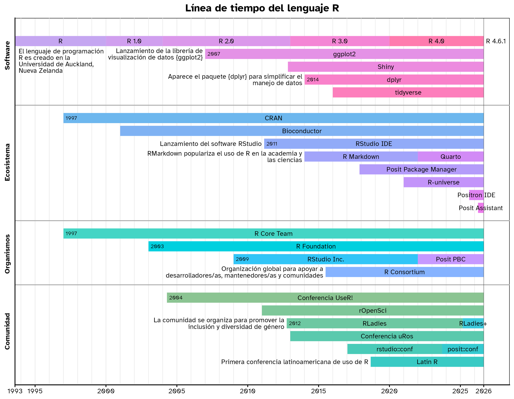

Línea de tiempo del lenguaje de programación R
Breve historia de eventos relevantes en el desarrollo de R, su ecosistema y comunidades
27/8/2026
Por curiosidad, estaba buscando un poco sobre la historia del lenguaje R. Quería tener una mejor noción sobre la temporalidad del desarrollo de R y el crecimiento de su ecosistema y comunidades, para entender más o menos el orden de los hechos principales.
Encontré una
línea de tiempo hecha por Jumping Rivers que me dio pie a iniciar una breve investigación cronológica. Luego, por casualidad, encontré el
paquete {vistime} para hacer líneas de tiempo con {ggplot2}, Plotly o Highcharts, lo que simplificó mucho la visualización.
Siguiendo la estructura sugerida por
el paquete {vistime}, en una tablita hecha con tribble() me puse a anotar todas las partes del ecosistema de R y las fechas de sus fundaciones.
Ver código de la tabla
library(dplyr)
Attaching package: 'dplyr'
The following objects are masked from 'package:stats':
filter, lag
The following objects are masked from 'package:base':
intersect, setdiff, setequal, union
library(lubridate)
Attaching package: 'lubridate'
The following objects are masked from 'package:base':
date, intersect, setdiff, union
# fecha de hoy
presente <- today() |> as.character()
data <- tribble(
~event , ~start , ~end , ~group ,
"R" , "1993-08-01" , "2000-01-01" , "Software" ,
"R 1.0" , "2000-01-01" , "2004-01-01" , "Software" ,
"R 2.0" , "2004-01-01" , "2013-01-01" , "Software" ,
"R 3.0" , "2013-01-01" , "2020-01-01" , "Software" ,
"R 4.0" , "2020-01-01" , presente , "Software" ,
"CRAN" , "1997-01-01" , presente , "Ecosistema" ,
"R Core Team" , "1997-01-01" , presente , "Organismos" ,
"RStudio IDE" , "2011-02-28" , presente , "Ecosistema" ,
"Positron IDE" , "2025-08-14" , presente , "Ecosistema" ,
"R Markdown" , "2014-01-01" , "2022-01-01" , "Ecosistema" ,
"Quarto" , "2022-01-01" , presente , "Ecosistema" ,
"Posit Assistant" , "2026-04-01" , presente , "Ecosistema" ,
"Posit Package Manager" , "2017-11-20" , presente , "Ecosistema" ,
"Bioconductor" , "2001-01-01" , presente , "Ecosistema" ,
"R-universe" , "2021-01-01" , presente , "Ecosistema" ,
"R Foundation" , "2003-01-01" , presente , "Organismos" ,
"RStudio Inc." , "2009-01-01" , "2022-01-01" , "Organismos" ,
"Posit PBC" , "2022-01-01" , presente , "Organismos" ,
"rOpenSci" , "2011-01-01" , presente , "Comunidad" ,
"R Consortium" , "2015-06-30" , presente , "Organismos" ,
"rstudio::conf" , "2017-01-13" , "2023-09-17" , "Comunidad" ,
"posit::conf" , "2023-09-17" , presente , "Comunidad" ,
"Latin R" , "2018-09-04" , presente , "Comunidad" ,
"Conferencia uRos" , "2013-01-01" , presente , "Comunidad" ,
"Conferencia UseR!" , "2004-04-20" , presente , "Comunidad" ,
"ggplot2" , "2007-01-01" , presente , "Software" ,
"tidyverse" , "2016-01-01" , presente , "Software" ,
"dplyr" , "2014-01-07" , presente , "Software" ,
"Shiny" , "2012-11-01" , presente , "Software" ,
"RLadies" , "2012-10-01" , "2025-03-01" , "Comunidad" ,
"RLadies+" , "2025-03-01" , presente , "Comunidad"
)
Los datos se ven así:
| evento | inicio | final | grupo |
|---|---|---|---|
| R | 1993 | 2000 | Software |
| R 1.0 | 2000 | 2004 | Software |
| R 2.0 | 2004 | 2013 | Software |
| ggplot2 | 2007 | 2026 | Software |
| Shiny | 2012 | 2026 | Software |
| R 3.0 | 2013 | 2020 | Software |
| dplyr | 2014 | 2026 | Software |
| tidyverse | 2016 | 2026 | Software |
| R 4.0 | 2020 | 2026 | Software |
| R Core Team | 1997 | 2026 | Organismos |
| R Foundation | 2003 | 2026 | Organismos |
| RStudio Inc. | 2009 | 2022 | Organismos |
| R Consortium | 2015 | 2026 | Organismos |
| Posit PBC | 2022 | 2026 | Organismos |
| CRAN | 1997 | 2026 | Ecosistema |
| Bioconductor | 2001 | 2026 | Ecosistema |
| RStudio IDE | 2011 | 2026 | Ecosistema |
| R Markdown | 2014 | 2022 | Ecosistema |
| Posit Package Manager | 2017 | 2026 | Ecosistema |
| R-universe | 2021 | 2026 | Ecosistema |
| Quarto | 2022 | 2026 | Ecosistema |
| Positron IDE | 2025 | 2026 | Ecosistema |
| Posit Assistant | 2026 | 2026 | Ecosistema |
| Conferencia UseR! | 2004 | 2026 | Comunidad |
| rOpenSci | 2011 | 2026 | Comunidad |
| RLadies | 2012 | 2025 | Comunidad |
| Conferencia uRos | 2013 | 2026 | Comunidad |
| rstudio::conf | 2017 | 2023 | Comunidad |
| Latin R | 2018 | 2026 | Comunidad |
| posit::conf | 2023 | 2026 | Comunidad |
| RLadies+ | 2025 | 2026 | Comunidad |
Luego agregué unas líneas para darle un color a cada grupo, y que los elementos dentro de cada grupo fueran cambiando levemente de color.
Ver código para crear colores
library(scales)
library(colorspace)
# paleta de colores base
colores <- colorspace::rainbow_hcl(6, c = 100, start = 190, end = 380)
# aplicar colores a grupos
data_color <- data |>
mutate(
color = recode_values(
group,
"Tidyverse" ~ colores[2],
"Eventos" ~ colores[3],
"Organismos" ~ colores[4],
"Comunidad" ~ colores[1] |> col_shift(30),
"Ecosistema" ~ colores[5] |> col_shift(-20),
"Software" ~ colores[6] |> col_shift(-20)
)
)
# ordenar grupos
data_grupo <- data_color |>
mutate(
group = factor(
group,
c("Software", "Ecosistema", "Organismos", "Comunidad", "Tidyverse")
)
)
# cambio de colores de elementos por grupo
timeline_data <- data_grupo |>
group_by(group) |>
arrange(group, desc(start)) |>
mutate(id = row_number()) |>
mutate(id = id / sum(id)) |>
mutate(
color = col_lighter(color, id * 20),
color = col_saturate(color, -id * 90),
color = col_shift(color, -id * 380)
)
Publicaciones relacionadas

Finalmente se crea la línea de tiempo con la función gg_vistime() del paquete {vistime}:
library(ggplot2)
library(vistime)
# línea de tiempo
timeline <- timeline_data |>
gg_vistime(
linewidth = 6,
title = "Línea de tiempo del lenguaje R"
)
Como se obtiene un gráfico ggplot, me puse a personalizar un poco la visualización para agregar cortes en los años relevantes, y cambiar un poco la apariencia.
Ver código
# cortes de fechas para el eje horizontal
años <- seq.Date(as_date("1993-01-01"), as_date("2026-01-01"), by = "years")
cortes <- c(
as_date("1993-08-01"),
seq.Date("1995-01-01", today(), by = "5 years"),
today()
)
# cambiar la tipografía en los geom_text internos de la función gg_vistime()
update_geom_defaults(
"text",
list(family = "Atkinson Hyperlegible", lineheight = 0.8, size = 3)
)
# personalizar gráfico
timeline_2 <- timeline +
scale_x_date(
expand = expansion(c(0, 0.05)),
minor_breaks = años,
breaks = cortes,
date_labels = "%Y"
) +
geom_vline(xintercept = today(), linewidth = 0.4, alpha = 0.3) +
scale_color_discrete(palette = "Dark2") +
theme(
text = element_text(family = "Atkinson Hyperlegible"),
plot.title = element_text(face = "bold"),
panel.grid.major.x = element_line(color = "#00000010"),
axis.text.y = element_text(
angle = 90,
hjust = 0.5,
face = "bold",
margin = margin(r = 6)
)
)
Además, agregué anotaciones a varios de los elementos para destacarlos dentro de la visualización.
Ver código para las anotaciones
library(stringr)
# anotaciones
# función para extraer posición de eventos
evento <- function(evento = "ggplot2") {
vistime_data(timeline_data) |>
filter(event %in% evento)
}
# eventos que tendrán año destacado
eventos_año <- c(
"CRAN",
"R Foundation",
"dplyr",
"ggplot2",
"RStudio IDE",
"RStudio Inc.",
"Conferencia UseR!",
"RLadies",
"R Core Team"
)
# anotaciones al lado izquierdo de eventos
eventos_texto <- tribble(
~event , ~descripcion , ~angosta ,
"ggplot2" , "Lanzamiento de la librería de visualización de datos {ggplot2}" , TRUE ,
"dplyr" , "Aparece el paquete {dplyr} para simplificar el manejo de datos" , FALSE ,
"RLadies" , "La comunidad se organiza para promover la inclusión y diversidad de género" , FALSE ,
"RStudio IDE" , "Lanzamiento del software RStudio" , FALSE ,
"R Markdown" , "RMarkdown populariza el uso de R en la academia y las ciencias" , FALSE ,
"Latin R" , "Primera conferencia latinoamericana de uso de R" , FALSE ,
"R Consortium" , "Organización global para apoyar a desarrolladores/as, mantenedores/as y comunidades" , FALSE ,
"R Foundation" , "Organización de apoyo al Proyecto R" , FALSE ,
"R Core Team" , "Grupo internacional de voluntarios/as para mantener y desarrollar el lenguaje" , TRUE ,
) |>
left_join(
vistime_data(timeline_data) |>
select(event, y),
join_by(event)
) |>
arrange(desc(y))
# agregar anotaciones
timeline_3 <- timeline_2 +
# marcar años de algunos eventos
annotate(
"text",
hjust = 0,
size = 2.4,
label = year(evento(eventos_año)$start),
x = evento(eventos_año)$start + months(2),
y = evento(eventos_año)$y
) +
# descripciones de eventos
annotate(
"text",
hjust = 1,
label = str_wrap(
eventos_texto$descripcion,
ifelse(eventos_texto$angosta, 30, 50)
),
x = evento(eventos_texto$event)$start - months(2),
y = evento(eventos_texto$event)$y
) +
# anotaciones especiales
annotate(
"text",
hjust = 0,
vjust = 1,
label = str_wrap(
"El lenguaje de programación R es creado en la Universidad de Auckland, Nueva Zelanda",
28
),
x = evento("R")$start + months(3),
y = evento("R")$y - 0.6
) +
annotate(
"text",
hjust = 0,
label = "R 4.6.1",
x = evento("R 4.0")$end + months(2),
y = evento("R 4.0")$y
)
El resultado es la siguiente visualización en línea de tiempo:

Varias cosas me resultaron interesantes, como la varianza en el tiempo que dura cada versión mayor de R, la tardía introducción de RStudio, pero por sobre todo el hecho de que {dplyr}, un paquete que me parece fundamental, fue introducido después que {ggplot2} y {shiny}!
Puedes encontrar el código completo en este repositorio.
Publicaciones sobre visualización de datos